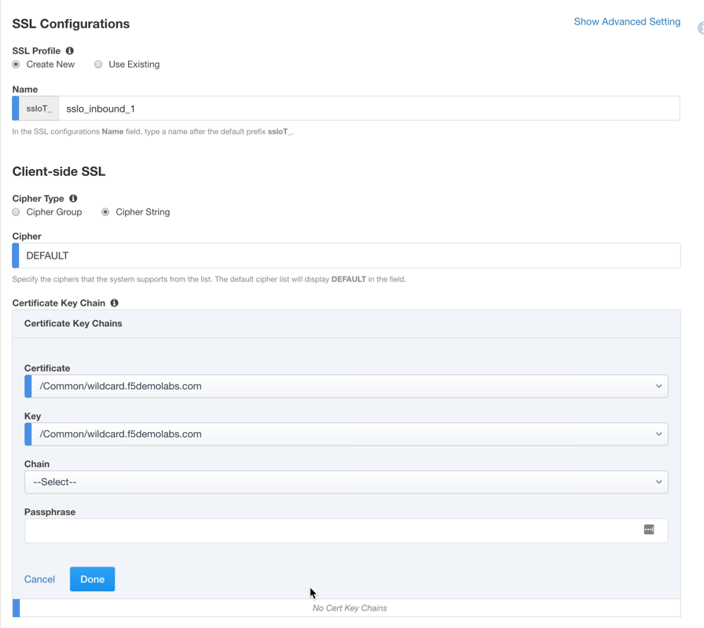

Community Training Classes & Labs > F5 SSL Orchestrator Index
2.2.2. LAB 2 – CREATE A GATEWAY REVERSE PROXY SSLO¶
SSL Orchestrator generally defines inbound traffic flows with a “gateway” architecture. That is, SSLO is designed to sit in front of a separate ADC/load balancer or routed path, and not directly in front of applications, though it is technically possible to support a “single instance” listener going to a single pool of resources. This lab will be re- using the security services created in the first lab to create a single inbound “gateway” service SSLO configuration.
Note
This lab will consist of an abbreviated set of steps, as some of the objects created in Lab1 (services and service chains) will be fully re-usable here. If any of these objects have not been created, please review Lab 1 for more detailed configuration instructions.
2.2.2.1. Step 1: Review the lab diagram and map out the services and endpoints¶
Specifically, note that in this lab there is a web server on the internal network (the client’s network in this case) that external users want to get to. An external client desktop exists on the external/outbound network, that accesses these resources through SSLO.
The external client is attached to a 10.30.0.0/24 network and is assigned the IP 10.30.0.70. This network is attached to the BIG-IP 1.2 interface.
The web server is an Ubuntu 14.04 LTS server configured with Apache2 and PHP5, and listens on five addresses:
- 10.20.0.90
- 10.20.0.91
- 10.20.0.92
Each instance includes a simple Apache2 text page that also shows which site was accessed. The pages are all (only) hosted via HTTPS port 443.
In lieu of a separate DNS server in the lab, the external client has static /etc/hosts entries that map the above addresses to the following URLs, respectively:
- test0.f5demolabs.com
- test1.f5demolabs.com
- test3.f5demolabs.com
A wildcard (*.f5demolabs.com) server certificate and private key have been installed on the SSL Orchestrator.
The external client has two options for accessing the internal websites: via wildcard (0.0.0.0/0) gateway, and direct IP listener. The lab will explore both options below.
Note
SSL Orchestrator sends all traffic through an inline layer 3 or HTTP device in the same direction - entering through the inbound interface. It is likely, therefor, that the layer 3 device may not be able to correctly route both outbound (forward proxy) and inbound (reverse proxy) traffic at the same time. Please see the appendix, “Routing considerations for layer 3 devices” for more details.
2.2.2.2. Step 2: Configure an L3 inbound SSLO deployment through Guided Configuration¶
In this scenario, an SSLO L3 inbound listener is configured as a gateway service. It will listen on a wildcard VIP (0.0.0.0/0), or otherwise specific subnet (vs. a dedicated single IP), and terminate inbound TLS traffic flows via wildcard or subject alternative name (SAN) certificate.
- Select the SSL Orchestrator then select Configuration.
{kind=link}
- In the SSL Orchestrator dashboard view, select the Topologies tab (bottom) and click Add.

- Configuration review and prerequisites – take a moment to review the topology options and workflow configuration, then click Next.
{kind=link}
Topology Properties
- Name: sslo_inbound_1
- Protocol: TCP
- IP Family: IPv4
- Topology: select L3 Inbound
- Click Save & Next

SSL Configuration – an inbound topology requires different SSL settings.
- Click Show Advanced Setting

lient-side SSL
Cipher Type: Cipher String
Cipher String: DEFAULT
Certificate Key Chain – the certificate key chain represents the certificate and private key of an endpoint server instance (the target of a remote client’s request). In a gateway-mode configuration, this would typically be a wildcard of Subject Alternative Name (SAN) certificate in the event the SSLO inbound listener was intended to service multiple sites. In this lab a wildcard certificate has been provided. Select the pencil icon to edit, then select the wildcard.f5demolabs.com certificate and private key and click Done.
Note
SSL Settings minimally require RSA-based template and CA certificates but can also support Elliptic Curve (ECDSA) certificates.
Server-side SSL
- Cipher Type: Cipher String
- Cipher String: DEFAULT
- Trusted Certificate Authority – as an inbound solution, the server-side SSL would be pointing to internal servers. While definitely possible to perform validation against internal server certificates, it is likely less important to do so. Leave this setting as is.
Expire Certificate Response – Assuming no internal certificate validation is needed, the default drop setting will cause the connection to fail, so set this to Ignore.
Untrusted Certificate Authority – Assuming no internal certificate validation is needed, the default drop setting will cause the connection to fail, so set this to Ignore.
[Advanced] OCSP – Assuming no internal certificate validation is needed, any OCSP configuration will cause the connection to fail, so leave this as is.
[Advanced] CRL – Assuming no internal certificate validation is needed, any CRL configuration will cause the connection to fail, so leave this as is.
Click Save & Next.

Services List – the same services can be leveraged here, so simply click Save & Next.
Service Chain List – the same service chains can be leveraged here, so simply click Save & Next.
Security Policy – the security policy requirements are specific to each organization, though an inbound security policy would likely be less complex than an outbound policy.
Delete the built-in “Pinners_Rule”, edit the “All Traffic” policy to add the service chain with the L2 and TAP services (only),

Click Save & Next.
Interception Rule – here is where a gateway-mode topology and the existing application topology generally differ. Where an explicit application topology “bolts onto” an existing application that performs its own SSL management (SSL offload), traffic management (pools) and traffic intelligence (iRules, profiles), the gateway-mode SSLO topology provides a single, generic entry point for potentially multiple applications, and would sit in front of another ADC or routing device. This is mostly useful when an SSL visibility device must sit closer to the outer edge of an environment, and/or when the SSL visibility product “owner” does not otherwise own the applications or ADC(s).
It is possible to configure an L3 Inbound topology configuration with a single target IP address and port and destination pool (targeted mode). However, an L3 Inbound topology must re-encrypt the inbound traffic. For this lab choose Gateway Mode
Gateway mode – interception rule listening on a wildcard IP, port 443, with a wildcard or SAN certificate. Clients route through SSLO.
- Click Hide Advanced Setting
- Source Address: 0.0.0.0/0
- Destination Address/Mask: 0.0.0.0/0
- Port: 443
- VLANs: outbound (this is the server-side VLAN)
- [Protocol Settings] L7 Profile Type – this setting enables or disables HTTP processing. Select HTTP
- [Protocol Settings] L7 Profile – if the above option is set to HTTP, this option selects a specific HTTP profile. Set to HTTP and /Common/http.

Summary – the summary page presents an expandable list of all of the workflow-configured objects. To expand the details for any given setting, click the corresponding arrow icon on the far right. To edit any given setting, click the corresponding pencil icon. Clicking the pencil icon will send the workflow back to the selected settings page.
- When satisfied with the defined settings, click Deploy.
Testing – for gateway-mode testing, the lab’s inbound desktop client includes static Hosts entries that match the real IPs of the internal web server,
- test0.f5demolabs.com = 10.20.0.90
- test1.f5demolabs.com = 10.20.0.91
- test3.f5demolabs.com = 10.20.0.92
and a static persistent route that points 10.1.10.0/24 traffic to the BIG-IP outbound (external) VLAN self- IP (10.1.20.100). *www.f5demolabs.com *= 10.30.0.200
{kind=link}